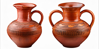

Exhibits
We have over 200 items in our museum. Take a look at some of our most popular exhibits below.
Pottery
Circa 1730
Unearthed during an excavation at a local farm, this earthenware bowl is thought to originate from the early 1700s. Its simple, robust form suggests it was used for mixing gains in a rural Oakminster kitchen. The glazed finish and subtle maker’s marks reflect the craftsmanship of local potters and provide insight into everyday domestic life during the era.
The Ceramic Collection
Circa 6th Century

These twin ceramic jugs were discovered by a local collector. Displayed together for the first time, the jugs exemplify the style of a Greek terracotta wine jug or marriage vase. Our archivist is currently carrying out further research with a Greek university.
The Daughters
1780
This rennaissance-style oil painting, dated 1780, portrays the local Oakminster millowner with his daughters. Commissioned posthumously by the family, the work captures a moment of quiet dignity and familial warmth. The artist, believed to be an itinerant painter passing through Berkshire, beautifully preserves a piece of history from the Oakminster community.